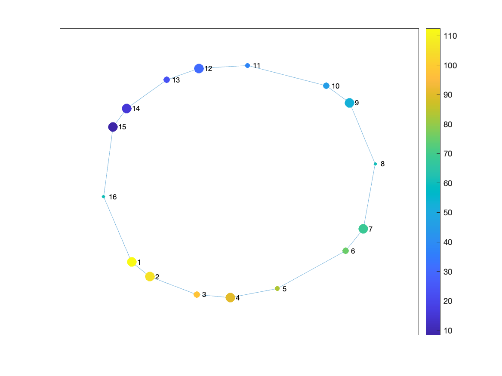
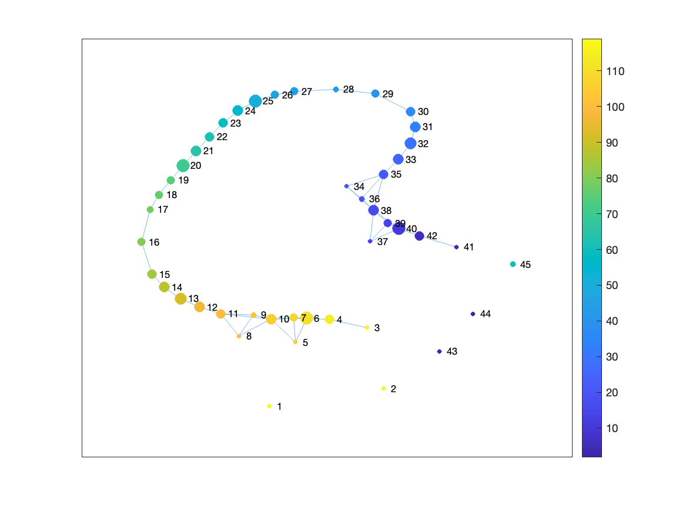
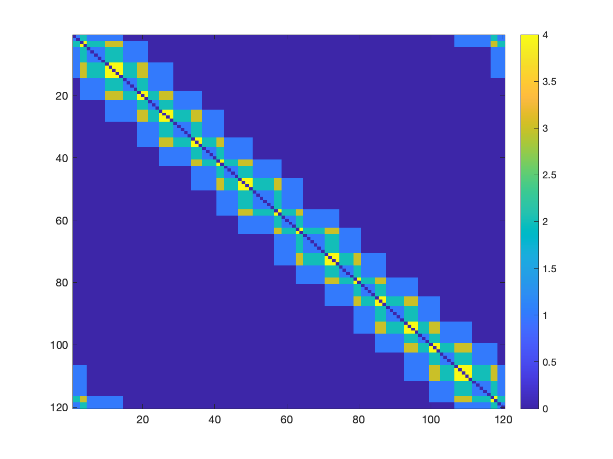

Tutorial 2: Running multiple Mappers
In this tutorial, we will show how to run the Mapper algorithm from the command line. We will use the same data as in Tutorial 1, the trefoil knot dataset.
Our goal is to get to the following command:
ARGS="cohort_csv='...';"
ARGS="$ARGS config_path='...';"
matlab -nodesktop -r "$ARGS run('code/analysis/run_main.m')"
The above command will run the run_main.m script with two arguments: cohort_csv and config_path. The cohort_csv argument is the path to the cohort file, and the config_path argument is the path to the configuration file. Further, we will build those two files.
Step 1: Check the data
The example data we will use for this tutorail is a trefoil knot dataset where we have 120 datapoints with 3 features each. The data is stored in a file called data_treefoil.1D in the hasegan_et_al_netneuro_2024/data/trefoil_knot/ directory.
We need the data to be in the right format in order so that we process it with the DeMapper CLI.
The data has to be a 2D matrix. DeMapper CLI can load different file formats that contain the matrix, as described here.
Using BASH, we can check the contents of the trefoil knot dataset:
head -n 5 hasegan_et_al_netneuro_2024/data/trefoil_knot/data_treefoil.1D
# Output:
# 0.0 -1.0 0.0
# 0.2635825469361579 -0.9902526406195032 -0.15773807393743752
# 0.5246694072399408 -0.9611307990395632 -0.31152669793339155
# 0.7807914698042207 -0.9129938129478427 -0.4575153084753231
# 1.0295324819206537 -0.8464360205429347 -0.5920486389876383
wc -l hasegan_et_al_netneuro_2024/data/trefoil_knot/data_treefoil.1D
# Output:
# 120 hasegan_et_al_netneuro_2024/data/trefoil_knot/data_treefoil.1D
The file has 120 rows and 3 columns separated by a space. This 1D file is one of the correct formats supported by the DeMapper CLI.
Step 2: Create the cohort file
We want to tell the DeMapper CLI about our participants cohort. In this case, we have only 1 “participant” (the trefoil knot dataset). We will create a cohort file cohort.csv with the following content:
id0,id1,id2,path
trefoil,,,hasegan_et_al_netneuro_2024/data/trefoil_knot/data_treefoil.1D
This will link the participant trefoil with the path pointing to the data_treefoil.1D file.
Note
Note that the path is relative to the base of the DeMapper repository. When running the DeMapper CLI, the path will be resolved to the correct location. So we will have to provide a data_root parameter to the CLI, which will be the base of the DeMapper repository.
Step 3: Create the config file
The config file will contain the parameters for the Mapper algorithm. We will create a configuration file mappers.json with the following content:
{
"preprocess": [
{ "type": "zscore" }
],
"mappers": [{
"type": "BDLMapper",
"k": 6,
"resolution": [3, 5, 10],
"gain": [30, 40, 50]
}],
"analyses": [
{ "type": "plot_graph" },
{ "type": "compute_stats" },
{ "type": "compute_temp" }
]
}
Let’s break down the configuration file that will be applied for each item in the cohort file:
1. preprocess
Preprocessing will zscore the data. This is important because the Mapper algorithm is sensitive to the scale of the data. We want to make sure that the data is centered and scaled. You can check other available preprocessing options in the preprocessing section.
2. mappers
The mappers array will set which Mapper configurations to run. In this case, the Mapper CLI will generate 9 Mappers, with the following tags:
BDLMapperOpts_6_3_30
BDLMapperOpts_6_3_40
BDLMapperOpts_6_3_50
BDLMapperOpts_6_5_30
BDLMapperOpts_6_5_40
BDLMapperOpts_6_5_50
BDLMapperOpts_6_5_30
BDLMapperOpts_6_5_40
BDLMapperOpts_6_5_50
You can check the preset Mapper configurations in the configuration presets section
Alternatively, you can set all the Mapper parameters manually. We will create a more advanced mapper configuration file mappers_adv.json with the following content:
{
"preprocess": [
{ "type": "zscore" }
],
"mappers": [{
"type": "CustomMapper",
"name": "DistsGeoBDLMapper",
"preprocess_type": "none",
"dist_type": ["cityblock", "euclidean", "chebychev", "correlation", "cosine"],
"embed_type": "CMDS",
"embed_dim": 2,
"prelens_type": "wtd-pen",
"prelens_rknnparam": 6,
"binning_type": "Nd",
"binning_resolution": 5,
"binning_gain": 30,
"binning_nsides": 4,
"clustering_type": "linkage_histo",
"clustering_histo_bins": 10,
"finalgraph_type": "full"
}],
"analyses": [
{ "type": "plot_graph" },
{ "type": "compute_stats" },
{ "type": "compute_temp" }
]
}
This configuration will generate five Mapper configurations with the distance parameter being set to either “cityblock”, “euclidean”, “chebychev”, “correlation”, or “cosine”. All the other parameters are fixed to constant values defined within the Mapper configuration. The following tags will be generated for this configuration, using the name parameter as prefix:
DistsGeoBDLMapper_cityblock
DistsGeoBDLMapper_euclidean
DistsGeoBDLMapper_chebychev
DistsGeoBDLMapper_correlation
DistsGeoBDLMapper_cosine
3. analyses
The analyses array will set which analyses to run. In this case, we will run the plot_graph, computer_stats, and compute_temp analyses. You can check other available analyses in the analyses section.
Step 4: Running the DeMapper CLI
Now that we created the cohort and configuration files, we can run the DeMapper CLI. We will use the following command, that will run at the base of the DeMapper repository. In this case, the files were created in the tutorials/tutorial2/ directory, but feel free to create them in any directory as long as you change the paths accordingly.
Remember that in previous section on the cohort definition, we set the path to the data relative to the base of the DeMapper repository. The DeMapper CLI will resolve the path to the correct location if we provide the data_root parameter.
We will also provide have to provide an output directory where the results will be stored.
ARGS="cohort_csv='`pwd`/tutorials/tutorial2/cohort.csv';"
ARGS="$ARGS config_path='`pwd`/tutorials/tutorial2/mappers.json';"
ARGS="$ARGS output_dir='`pwd`/results/tutorial2_mappers';"
ARGS="$ARGS data_root='`pwd`';"
matlab -nodesktop -r "$ARGS run('code/analysis/run_main.m')"
Note
MATLAB needs to have the full paths of the files to be able to run the DeMapper CLI. So we use the pwd BASH command to set the full path of the cohort and configuration files.
Running the above command:
./tutorials/tutorial2/run_mappers.sh
# Output:
# ...
# Total mapper errors: 0
Step 5: Check the results
Lets explore the output directory to see the results of the Mapper algorithm. The output directory is defined in the run_mappers.sh script. In this case, the output directory is results/tutorial2_mappers/.
ls results/tutorial2_mappers
# Output:
# status.csv
# trefoil
cat results/tutorial2_mappers/status.csv
# Output:
# id0,id1,id2,mapper,preprocess,result,plot_graph,compute_stats,compute_temp
# trefoil,,,BDLMapper_6_10_50,1,1,1,1,1
# trefoil,,,BDLMapper_6_10_40,1,1,1,1,1
# trefoil,,,BDLMapper_6_10_30,1,1,1,1,1
# trefoil,,,BDLMapper_6_5_50,1,1,1,1,1
# trefoil,,,BDLMapper_6_5_40,1,1,1,1,1
# trefoil,,,BDLMapper_6_5_30,1,1,1,1,1
# trefoil,,,BDLMapper_6_3_50,1,1,1,1,1
# trefoil,,,BDLMapper_6_3_40,1,1,1,1,1
# trefoil,,,BDLMapper_6_3_30,1,1,1,1,1
The status.csv file shows the status of each Mapper configuration. In this case, all the Mappers were successfully computed.
We can explore the folders generated for each Mapper configuration:
ls results/tutorial2_mappers/trefoil
# Output:
# BDLMapper_6_10_30
# BDLMapper_6_10_40
# BDLMapper_6_10_50
# BDLMapper_6_3_30
# BDLMapper_6_3_40
# BDLMapper_6_3_50
# BDLMapper_6_5_30
# BDLMapper_6_5_40
# BDLMapper_6_5_50
ls results/tutorial2_mappers/trefoil/BDLMapper_6_5_30/ | cat
# Output:
# compute_temp-TCM-mat.1D
# compute_temp-TCM.png
# compute_temp-TCM_inv-mat.1D
# compute_temp-TCM_inv.png
# plot_graph.png
# res.mat
# stats.json
# stats_betweenness_centrality.1D
# stats_betweenness_centrality_TRs_avg.1D
# stats_betweenness_centrality_TRs_max.1D
# stats_core_periphery.1D
# stats_core_periphery_TRs_avg.1D
# stats_core_periphery_TRs_max.1D
# stats_degrees_TRs.1D
# stats_rich_club_coeffs.1D
The DeMapper CLI generated a set of files for each Mapper configuration. For an example of the generated files, we will explore the results/tutorial2_mappers/trefoil/BDLMapper_6_5_30/ directory.
The res.mat file is generate for each Mapper configuration. The other generated files are based on the analyses we defined in the configuration file. For example, the compute_temp analysis generated the compute_temp-TCM.png and compute_temp-TCM_inv.png files. The plot_graph analysis generated the plot_graph.png file. Those files are detailed below
1. res.mat file
The res.mat file contains the application of Mapper. This file is the same as the one generated in Tutorial 1. Loading it, we can generate the same Mapper graph as in the previous tutorial.
load('results/tutorial2_mappers/trefoil/BDLMapper_6_5_30/res.mat');
%% Simple visualization. Check Tutorial 1, Step 4 for more details
avgNode = cellfun(@mean, res.nodeMembers);
% and by sizing the nodes based on the number of node members
nodeSize = cell2mat(cellfun(@(x) size(x, 2), res.nodeMembers, 'UniformOutput', false));
nodeSize = normalize(nodeSize, 'range', [3, 10]);
figure;
g = graph(res.adjacencyMat);
plot(g, 'Layout', 'force', 'Usegravity', true, 'WeightEffect', 'inverse', ...
'MarkerSize', nodeSize, 'NodeCData', avgNode);
colorbar
colormap parula
The generated visualization will look like:
{kind=link}
2. The plot_graph analysis
The plot_graph analysis generates a simple visualization of the Mapper graph. The visualization is saved in the plot_graph.png file, as seen below.
You can observe that it’s the same image as we generated with the MATLAB code above. The DeMapper CLI generated this image automatically, so now you can easily check the Mapper graph without having to run the MATLAB code. You could check all the other Mappers graphs with a simple command:
open results/tutorial2_mappers/trefoil/*/plot_graph.png
You can see that some of the Mapper graphs are different. For example, one configuration failed to capture the shape of the trefoil knot as it tried to capture too much detail.
{kind=link}
Can you guess which Mapper configuration failed to capture the shape of the trefoil knot?
3. The compute_stats analysis
The files prefixed with stats are generated by the compute_stats analysis. The stats.json file contains basic statistics of the Mapper graph.
cat results/tutorial2_mappers/trefoil/BDLMapper_6_5_30/stats.json
# Output:
# {
# "n_nodes" : 16,
# "coverage_nodes" : 1,
# "coverage_TRs" : 1,
# "distances_max" : 8,
# "distances_entropy" : 3.14629,
# "assortativity" : 0.238255,
# "degree_TRs_avg" : 2.83333,
# "degree_TRs_entropy" : 0.979869
# }
Check the code/analysis/compute_stats.m file for the definition of the statistics generated. The compute_stats analysis is useful to understand the properties of the Mapper graph. Since it is generated for each configuration, you can compare the Mapper graphs based on the statistics.
4. The compute_temp analysis
The compute_temp analysis generates the temporal connectivity matrix (TCM) and its inverse. The TCM is the similarity matrix between the original points. The TCM_inv matrix is the inverse of the TCM matrix, representing the dissimilarity of original points. Those matrices can be used as input for other analysis or visualization.
{kind=link}
You can observe that each datapoint from the original dataset is similar to the other points in the neighborhood. The compute_temp analysis is useful to understand the similarity between the original points and how they are connected in the Mapper graph.
Step 6: Advanced Mapper configurations
Similarly, you could run the advanced Mapper configuration file mappers_adv.json.
ARGS="cohort_csv='`pwd`/tutorials/tutorial2/cohort.csv';"
ARGS="$ARGS config_path='`pwd`/tutorials/tutorial2/mappers_adv.json';"
ARGS="$ARGS output_dir='`pwd`/results/tutorial2_mappers_adv';"
ARGS="$ARGS data_root='`pwd`';"
matlab -nodesktop -r "$ARGS run('code/analysis/run_main.m')"
Running the above command:
./tutorials/tutorial2/run_mappers_adv.sh
# Output:
# ...
# Total mapper errors: 0
The results will be stored in the results/tutorial2_mappers_adv/ directory. You can explore the results as we did before.